| Cumulative threshold | Cloglog threshold | Description | Fractional predicted area | Training omission rate | Test omission rate | P-value |
|---|---|---|---|---|---|---|
| 1.000 | 0.018 | Fixed cumulative value 1 | 0.432 | 0.000 | 0.000 | 6.501E-3 |
| 5.000 | 0.068 | Fixed cumulative value 5 | 0.272 | 0.019 | 0.000 | 4.055E-4 |
| 10.000 | 0.129 | Fixed cumulative value 10 | 0.195 | 0.075 | 0.167 | 1.419E-3 |
| 1.519 | 0.025 | Minimum training presence | 0.395 | 0.000 | 0.000 | 3.793E-3 |
| 16.417 | 0.203 | 10 percentile training presence | 0.138 | 0.094 | 0.333 | 4.363E-3 |
| 20.552 | 0.249 | Equal training sensitivity and specificity | 0.113 | 0.113 | 0.333 | 2.038E-3 |
| 20.867 | 0.254 | Maximum training sensitivity plus specificity | 0.112 | 0.113 | 0.333 | 1.925E-3 |
| 12.287 | 0.154 | Equal test sensitivity and specificity | 0.172 | 0.075 | 0.167 | 7.67E-4 |
| 9.174 | 0.119 | Maximum test sensitivity plus specificity | 0.205 | 0.057 | 0.000 | 7.36E-5 |
| 1.519 | 0.025 | Balance training omission, predicted area and threshold value | 0.395 | 0.000 | 0.000 | 3.793E-3 |
| 14.129 | 0.173 | Equate entropy of thresholded and original distributions | 0.156 | 0.094 | 0.333 | 6.758E-3 |
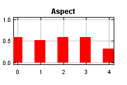
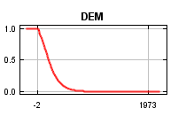
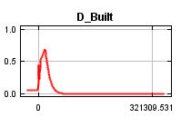
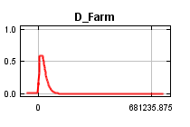
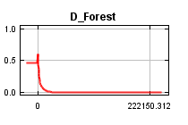
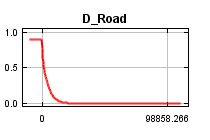
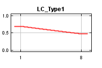
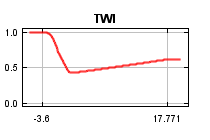
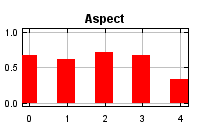
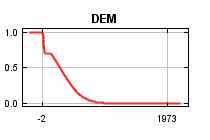
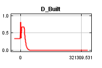
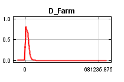
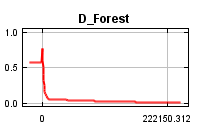
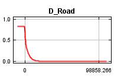
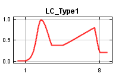
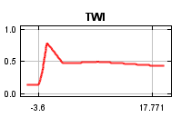
| Variable | Percent contribution | Permutation importance |
|---|---|---|
| D_Road | 27.9 | 19.8 |
| D_Farm | 24.8 | 27 |
| DEM | 20.5 | 26.2 |
| D_Forest | 12.5 | 9.1 |
| TWI | 5.6 | 5.5 |
| D_Built | 4.3 | 9.4 |
| Aspect | 3.4 | 1.9 |
| LC_Type1 | 1 | 1.1 |